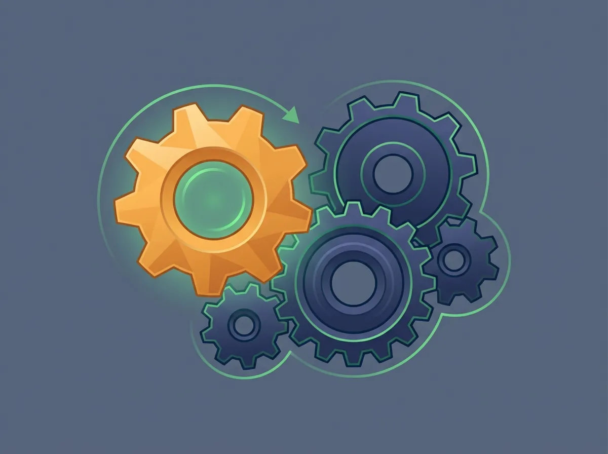
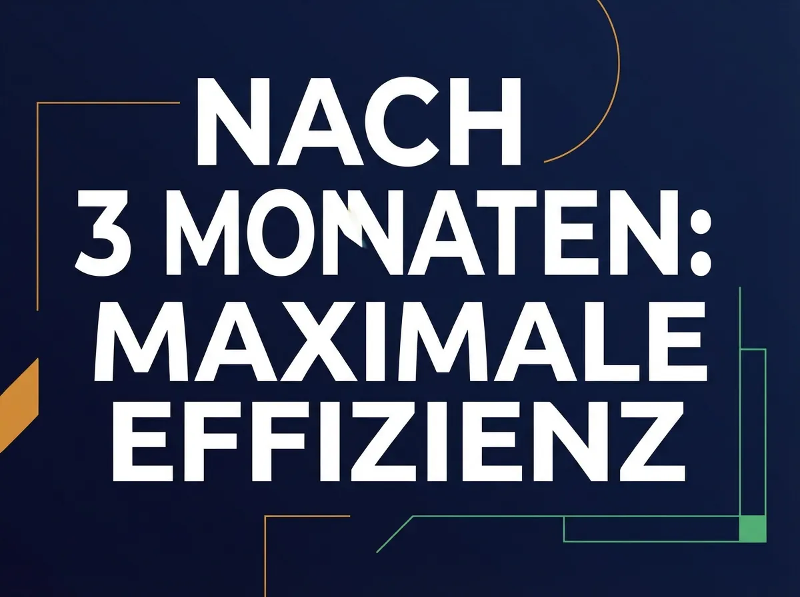

KI-Strategie · · 6 Min.
Wie Ihr KI-System dazulernt — und warum es nach 3 Monaten besser ist als am ersten Tag
Aus dem Archiv: Dieser Beitrag ist vor über einem halben Jahr erschienen. Manche Zahlen und Produktnamen haben sich seither geändert.
Kennen Sie das Gefühl? Sie nutzen ChatGPT seit einem halben Jahr — und es stellt Ihnen immer noch dieselben Fragen. Es weiß nicht, dass Sie ein Metallbaubetrieb in der Steiermark sind. Es weiß nicht, dass Ihre Kunden "Angebot" sagen und nicht "Proposal". Es kennt weder Ihren Tonfall noch Ihre Branche. Jedes Gespräch beginnt bei null.
Das liegt nicht daran, dass ChatGPT schlecht wäre. Es liegt daran, dass es kein Gedächtnis hat. Nicht für Sie, nicht für Ihren Betrieb, nicht für die Erfahrungen der letzten sechs Monate.
Ein richtig aufgesetztes KI-System funktioniert anders. Und der Unterschied zeigt sich nicht am ersten Tag — sondern nach drei Monaten.
Was "Lernen" bei KI wirklich bedeutet
Wenn wir von einem KI-System sprechen, das dazulernt, klingt das vielleicht nach Science-Fiction. Nach einem Computer, der plötzlich ein eigenes Bewusstsein entwickelt. Das ist es nicht. Was tatsächlich passiert, ist viel bodenständiger — und viel nützlicher.
Ein lernfähiges KI-System merkt sich Rückmeldungen. Es speichert, welcher Tonfall bei welcher Zielgruppe funktioniert. Es erinnert sich an die Fachbegriffe, die in Ihrem Betrieb üblich sind. Es weiß nach ein paar Wochen, dass "kurz und direkt" bei Ihren Stammkunden besser ankommt als "ausführlich und förmlich".
Das passiert nicht automatisch und nicht von Zauberhand. Es passiert, weil Ihre Mitarbeiter dem System Rückmeldung geben — genau wie sie es bei einem neuen Kollegen tun würden. "Das war zu lang." "Wir sagen Montageplan, nicht Installationsanweisung." "Bei Privatkunden duzen wir." Jede dieser Rückmeldungen macht das System ein Stück besser.
Die ersten drei Monate: Ein konkreter Zeitplan
Tag 1: Das System ist eingerichtet. Es kennt Ihre Grunddaten, Ihre Branche, die wichtigsten Regeln. Die Ergebnisse sind korrekt, aber generisch. Ein Angebot liest sich wie aus dem Lehrbuch — sachlich richtig, aber es fehlt der Charakter Ihres Unternehmens.

Woche 2: Nach den ersten Rückmeldungen merkt sich das System Ihre Vorlieben. Es weiß jetzt, dass Ihre Angebote immer mit einem persönlichen Satz beginnen. Dass Sie Preise netto angeben und die Zahlungsbedingungen am Ende stehen. Dass der Betreff "Angebot" heißt und nicht "Offerte".
Monat 1: Das System kennt inzwischen die Unterschiede. Privatkunden bekommen einen freundlichen, direkten Ton. Ausschreibungsantworten sind formal und detailliert. Stammkunden werden namentlich angesprochen. Die Ergebnisse brauchen kaum noch Korrekturen.
Monat 3: Das System arbeitet, als wäre es seit einem Jahr dabei. Es weiß, welche Formulierungen bei welchen Kundengruppen ankommen. Es schlägt Textbausteine vor, die zu Ihrer Unternehmenssprache passen. Und wenn ein neuer Mitarbeiter einsteigt, kann das System ihm erklären, wie Angebote im Betrieb geschrieben werden — weil es aus hunderten Rückmeldungen gelernt hat, was funktioniert.
Ein Beispiel aus der Praxis
Ein Mitarbeiter lässt das System ein Angebot für einen Privatkunden schreiben. Die erste Version klingt zu steif — zu viel Amtsdeutsch, zu wenig Mensch. Er gibt die Rückmeldung: "Das klingt zu förmlich. Unsere Privatkunden wollen sich nicht wie bei einer Behörde fühlen."
Das System merkt sich das. Beim nächsten Angebot für einen Privatkunden ist der Ton lockerer. Der Mitarbeiter bestätigt: "Genau so." Nach zwanzig Angeboten hat das System ein klares Bild davon, was bei Privatkunden funktioniert — und was bei einer Ausschreibung erwartet wird. Es verwechselt beides nicht mehr.
Kein Mitarbeiter muss dem System jedes Mal erklären, wie der Laden läuft. Es hat zugehört, sich Notizen gemacht und angepasst.
Was das System bewusst NICHT lernt
So nützlich dieses Dazulernen ist — es hat klare Grenzen. Und die sind Absicht.

Es gibt Bereiche, die vor Veränderung geschützt sind. Wir nennen sie geschützte Zonen. Dazu gehören:
- Compliance-Regeln: Welche Daten verarbeitet werden dürfen, welche nicht — das ist so konfiguriert, dass es sich nicht durch Feedback ändert. Der EU AI Act und die DSGVO gelten, egal wie oft jemand sagt "Das ist zu streng."
- Datengrenzen: Kundendaten gehen nicht an externe Server, nur weil es praktischer wäre. Die Architektur schützt das, nicht die Disziplin der Mitarbeiter.
- Identität des Systems: Es bleibt Ihr Werkzeug. Es entwickelt keine eigene Agenda, keine eigenen Ziele. Es wird besser in dem, was Sie brauchen — nicht in dem, was es selbst für richtig hält.
Diese Trennung ist entscheidend: Stil und Vorlieben entwickeln sich. Regeln und Grenzen bleiben fest.
Kein System beginnt bei null
Wenn wir ein KI-System für Ihren Betrieb einrichten, starten wir nicht mit einem leeren Blatt. Es gibt strukturelle Erfahrungswerte aus anderen Einrichtungen — dabei fließen keine Kundendaten, nur Erkenntnisse über Aufbau und Arbeitsweise. Welche Struktur für Angebote gut funktioniert. Wie Feedback-Schleifen am besten organisiert werden. Welche Fehler man vermeiden sollte.
Ihr System profitiert also von Tag eins von Erfahrungen, die andere Betriebe bereits gemacht haben. Die individuelle Anpassung — Ihr Tonfall, Ihre Prozesse, Ihre Begriffe — kommt dann über die ersten Wochen dazu.
Wie ein guter neuer Mitarbeiter
Stellen Sie sich das System wie einen neuen Mitarbeiter vor, der am ersten Tag anfängt. Er bringt solides Fachwissen mit. Er kennt die Grundlagen. Aber er weiß noch nicht, wie bei Ihnen der Kaffee gekocht wird — im übertragenen Sinn.
In den ersten Wochen fragt er nach, macht Notizen, passt sich an. Nach drei Monaten kennt er die Abläufe, die Kollegen, die ungeschriebenen Regeln. Und er respektiert die Hausordnung — nicht weil er muss, sondern weil sie von Anfang an klar kommuniziert wurde.
Der Unterschied zum echten Mitarbeiter: Das KI-System vergisst nichts. Es hat keinen schlechten Tag. Und wenn ein zweiter Standort dazukommt, kann es sein Wissen weitergeben, ohne dass jemand drei Monate einarbeiten muss.
Was heißt das für Ihren Betrieb?
Ein KI-System, das dazulernt, ist kein Luxus für Großkonzerne. Es ist eine praktische Lösung für Betriebe, die nicht jedes Mal von vorne anfangen wollen. Die wollen, dass das System nach sechs Monaten besser arbeitet als am ersten Tag — und nicht genauso ahnungslos wie am Anfang.
Wenn Sie wissen möchten, wie so ein System konkret in Ihrem Betrieb aussehen könnte, melden Sie sich bei mir. Ich bin Armin Fradler, KI-Berater in Oberwart, und ich helfe Betrieben in der Region, KI sinnvoll und regelkonform einzusetzen — mit Systemen, die nicht vergessen, was sie gelernt haben.
Für die Verarbeitung sensibler Daten können lokale Open-Source-Modelle direkt auf Ihren Geräten laufen — ohne Cloud, ohne laufende Lizenzkosten. Für anspruchsvollere Aufgaben kommen Cloud-Modelle zum Einsatz, deren Kosten nutzungsabhängig sind. Diese hybride Architektur verbindet Datenschutz mit Leistung.
Armin Fradler begleitet Bildungsorganisationen und Teams beim Umgang mit KI und unterrichtet selbst in der Erwachsenenbildung.